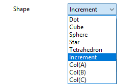
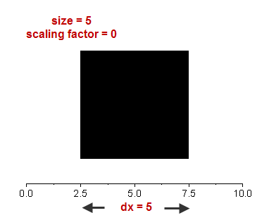
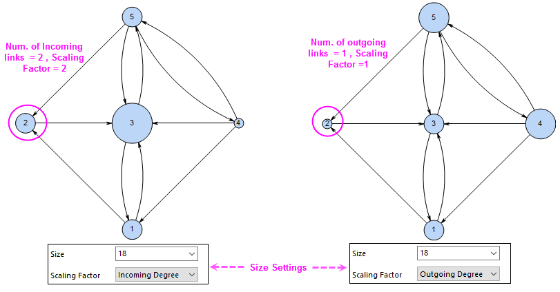
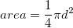
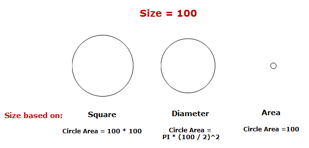
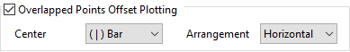
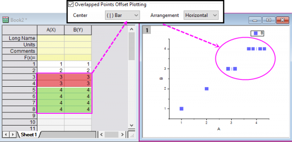
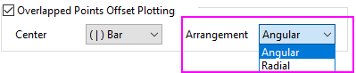

Die RegisterkarteSymbole (Details Zeichnung)
PD-Dialog-Sym-Tab
Die Bedienelemente dieser Registerkarte werden dazu verwendet, die folgenden Diagrammtypen anzupassen:
- 2D-Diagramme: Punkt, Linie + Symbol, Linienschar, Blase, Punkt, Ternär, Radar und Polar
- Kreisdiagramm: Karte mit Kreisdiagrammen
- 3D-Diagramme: Punkt, Punkt + Ankerlinie, Wände, Bänder, Wasserfall
- Statistikdiagramme: Boxdiagramm, Histogramm + Wahrscheinlichkeiten, QC, Pareto-Diagramm, Wahrscheinlichkeitsdiagramm, Q-Q-Diagramm
- Kategoriale Zeichnungen: Netzwerk, Kreispackung, Hierarchisches Edge Bundling
|
|
|
|
2D- und Statistische Diagramme
|
Karte mit Kreisdiagrammen
|
|
|
|
|
Netzwerk
|
Kreispackung
|
|
|
|
Hierarchisches Edge Bundling
|
3D-Diagramme
|
Symboltyp (3D)
Für das 3D-Symboldiagramm können Sie das Symbolformat als 3D- oder 2D-Typ festlegen. Wenn Sie in dieser Auswahlliste 2D auswählen, zeigt die Registerkarte die Optionen als 2D-Diagramme. 2D-Symboltypen können in den 3D-OpenGL-Punktdiagrammen verwendet werden.
Hinweis: Wenn das 3D-Diagramm erstellt wird, wenn OpenGL deaktiviert ist, unterstützt die Registerkarte Symbol die Optionen nur als 2D-Diagramme im Dialog Details Zeichnung.
Vorschau (2D)
Zeigt eine Vorschau der Einstellungen, die auf der Registerkarte festgelegt sind, gegen die ausgewählte Hintergrundfarbe. Klicken Sie auf den nach unten zeigenden Pfeil neben dem Feld Vorschau, um die Symbolgalerie zu öffnen.
Zeigen Sie die Zeichen in der Symbolgalerie an, indem Sie das Kontrollkästchen Buchstaben in Symbol-Galerie auf der Registerkarte Grafik des Dialogs Optionen (Einstellungen: Optionen) aktivieren. Wenn die Option 'Buchstaben in Symbol-Galerie' aktiviert ist, benutzen Sie bitte die Auswahlliste Schrift in Galerie (in der Gruppe Vorschau) um die Zeichenliste festzulegen.
Form (3D)
Wählen Sie eine Symbolform für Ihr 3D-Diagramm. Es gibt fünf Symbolformen im 3D-Diagramm: Punkt, Würfel, Kugel, Stern und Tetraeder.
Sie können in der Auswahlliste eine einzelne Form für alle Symbole auswählen oder die Symbolform auf zirkuläres Inkrementieren innerhalb der Formliste setzen oder die Spalte als den Formindex verwenden, um die Form festzulegen (der Spaltenwert ist größer als 5, die erste Form wird verwendet).

Größe
Geben Sie Symbolgröße in Punkten im Auswahlfeld Größe ein oder wählen Sie diese aus.
Wenn Sie eine Arbeitsblattspalte aus diesem Kombinationsfeld auswählen (siehe Datensatz zum Festlegen der Diagrammeigenschaften verwenden), werden zwei zusätzliche Bedienelemente hinzugefügt: Skalierungsfaktor und Größenformel. Sie können in Kombination verwendet werden.
_Symbol_Tab/Tip_icon.png) | Seit Origin 2022 unterstützt die Software Karten mit Kreisdiagrammen. In einer Karte mit Kreisdiagrammen können Sie das Segment gesamt für die Symbolgröße auswählen. Das bedeutet, dass die Gesamtwerte aller Segmente aus verschiedenen Spalten verwendet werden, um die Größe der Kreise zu bestimmen. |
Skalierungsfaktor
Geben Sie im Kombinationsfeld Skalierungsfaktor einen Faktor zum Skalieren der zugehörigen Spaltenwerte ein oder wählen Sie ihn aus. Wählen Sie z.B. 0,25, um jede Zelle mit dem Faktor 1/4 zu skalieren.
Hinweis: Wenn der Skalierungsfaktor 0 ist, bestimmen Sie die Werte in der Spalte Größe die Symbolgröße hinsichtlich der Werte der X-Achsenskalierung. 
Skalierungsfaktor (Netzwerk)
Wenn Sie für ein Netzwerkdiagramm einen Spaltendatensatz auswählen, um die Symbolgröße festzulegen, funktioniert diese Option genauso wie für 2D- und 3D-Diagramme.
Wenn Sie einen Wert für Größe eingeben, wird diese Option verwendet, um einen Faktor hinzuzufügen, der einen Bezug zwischen der Anzahl von Verbindungen zwischen den zwei Knoten zur Größe herstellt.
- Konstante: Der tatsächliche Wert in Größe definiert die Symbolgröße direkt.
- Grad: Die Anzahl der Verbindungen zwischen zwei Knoten, einschließlich eingehender und ausgehender Verbindungen
- Eingehender Grad: Die Anzahl der eingehenden Verbindungen zwischen zwei Knoten
- Ausgehender Grad: Die Anzahl der ausgehenden Verbindungen zwischen zwei Knoten

Wenn Sie die Richtung für die Knotenverbindungen nicht festgelegt haben, befinden sich alle Gradoptionen bei demselben Wert, das heißt, der Anzahl der Verbindungen zwischen zwei Knoten.
Größenformel
Nur verfügbar, wenn eine Spalte mit Arbeitsblattwerten zum Steuern der Symbolgröße ausgewählt ist. Geben Sie einen LabTalk-Ausdruck ein, um die Symbolgröße zu skalieren. Der Ausdruck muss ein Double ausgeben.
Es gibt drei Variablen, die für dieses Bearbeitungsfeld spezifisch sind und die verwendet werden können, um einen Ausdruck zu erzeugen: s ist der Wert der Größenspalte (s[i]), s1 ist der minimale Wert der Größenspalte und s2 ist der maximale Wert. Geben Sie zum Beispiel (s-s1)/(s2-s1) ein, um die Werte in der Größenspalte zu normalisieren.
Größeneinheit
Legen Sie die Einheit für die Größe fest.
- Punkt: Legen Sie die Größe der Symbole in Punkten fest. Dies ist die Standardeinheit für die Symbole.
- X-Skalierung: Legen Sie die Größe der Symbole nach X-Skalierung fest.
- Y-Skalierung: Legen Sie die Größe der Symbole nach Y-Skalierung fest.
Vor Origin 2020 können Sie die Größe nur in Punkten und nach X-Skalierung festlegen. Um die Größe nach X-Skalierung festzulegen, können Sie eine Spalte für Größe auswählen und dann den Skalierungsfaktor auf 0 setzen.
Größe basiert auf
Wenn die Symbolform ein Kreis ist, wird das zusätzliche Bedienelement Größe basiert auf verfügbar. Sie definiert, wie die Größe der Kreissymbole (d.h. die Kreisfläche) durch einen Wert bestimmt wird, den Sie in das Kombinationsfeld Größe eingeben oder auswählen. Drei Optionen sind verfügbar:
- Quadrat: Die Kreisfläche ist gleich der Fläche des Quadrats (Länge * Länge), in dem die Länge mit dem Kombinationsfeld Größe definiert wird.
- Durchmesser: Der Durchmesser des Kreises ist gleich dem definierten Wert für Größe und die Kreisfläche wird aus dem Durchmesser mit der Gleichung  berechnet.
- Fläche: Die Kreisfläche ist gleich dem definierten Wert für Größe.

Hinweis: Bei Kreispackungsdiagrammen ist die Symbolform ein Kreis und die Symbolgröße wird mit einem Spaltendatensatz festgelegt. Sie können diese Option verwenden, um zu entscheiden, wie die Werte für die Symbolgröße verwendet werden sollen, als Fläche oder Radius.
Versatz(%)
Bei einem Diagramm für hierarchisches Edge Bundling können Sie den Versatz der Blattpunkte von den Endpunkten der Verbindungslinien aus anpassen. Wenn der Versatz = 0, befindet sich das Zentrum der Blasen am gleichen Punkt der Endpunkte.
Dieses Bedienelement ist mit der Versatzsteuerung der Knoten verbunden und ist der Prozentsatz des Radius.
Randbreite (2D)
Wählen Sie den gewünschten Wert aus dieser Auswahlliste oder geben Sie einen Wert innerhalb des Bereichs ein, um die Rahmenstärke der leeren bzw. offenen Symbole zu bestimmen.
Skalieren nach Symbolgröße
Dieses Kontrollkästchen ist standardmäßig aktiviert. Das heißt, die Rahmendicke eines Datenpunkts basiert auf seiner Symbolgröße. Ist dieses Kontrollkästchen aktiviert, ist der akzeptable Wert für das Feld Rahmendicke Standard und liegt innerhalb 0 ~ 100:
- Wählen Sie Standard, um den Wert zu verwenden, der in der Auswahlliste Freiraum um Symbol (%) auf der Registerkarte Grafik des Dialogs Optionen festgelegt wurde.
- Wählen Sie 0, um die gleiche Rahmendicke für alle Symbole zu verwenden. Wenn Sie Symbolgröße von einem Datensatz gesteuert wird und nach Punkten unterschiedlich ist, dann heißt das, wenn die Rahmendicke auf 0 gesetzt ist, dass alle Symbole die Rahmendicke des kleinsten Symbols haben.
- Wählen Sie n (0 < n <= 100), um n % des Symbolradius zu verwenden.
Deaktivieren Sie das Kontrollkästchen Skalieren nach Symbolgröße. Sie können die Rahmendicke festlegen, indem Sie einen Wert eingeben oder auswählen, der in Punkten den Werten entspricht, die im Feld Größe.
| In Versionen älter als Origin 2019b gibt es kein Kontrollkästchen Skalieren nach Symbolgröße. Die Rahmendicke kann nur durch Eingabe/Auswahl der Prozent des Symbolradius festgelegt werden. |
Farbe
Abhängig von Ihrer Symbolauswahl wird entweder eine Schaltfläche für Symbolfarbe angezeigt oder eine Schaltfläche für Randfarbe und eine für Füllfarbe. Entscheiden Sie sich für eine Farbe, indem Sie auf die entsprechende Schaltfläche klicken. Weitere Informationen finden Sie unter Diagrammfarben benutzerdefiniert anpassen.
| Seit Origin 2019 können Sie verschiedene benutzerdefinierte Inkrementfarblisten für Rahmenfarbe und Füllfarbe festlegen. |
Hinweis: Wenn Sie im Fall der Karten mit Kreisdiagrammen eine Farbliste auf der Registerkarte Nach Punkte in der Farbauswahl für Randfarbe oder Füllfarbe festlegen, wird die Farbliste auf die Kreissegmente in jedem Kreis angewendet.
Füllung der Blätter
Bei einem Kreispackungsdiagramm können Sie neben der Füll- und Randfarbe für alle Symbole auch die Farbe aller Blätter separat festlegen.
Transparenz
Um die Transparenz der Symbole festzulegen, verschieben Sie den Schieber oder geben Sie die gewünschte ganze Zahl zwischen 0 und 100 in das Feld ein. Beachten Sie, dass das Symbol bei 0 gar nicht und bei 100 vollkommen transparent ist.
Wenn Linientransparenz folgen aktiviert ist, entspricht die Transparenz der Symbole der Transparenz der Linie.
Autotransparenz (Netzwerk)
Legen Sie fest, dass die Transparenz des Symbolrands und der Symbolfüllung der Transparenz der Verbindungslinien folgt.
Transparenz nur für Füllung
Wenn Sie die Transparenz für das Symbol festgelegt haben, können Sie dieses Kontrollkästchen aktivieren, um zu verhindern, dass die Transparenz auf den Rand des Symbols angewendet wird. Bitte beachten Sie, dass dieses Kontrollkästchen nur für 2D-Diagramme gezeigt wird, wenn die Option Füllfarbe gezeigt wird und das Kontrollkästchen Linientransparenz folgen deaktiviert ist.
Überlappende Punkte verschieben (2D)
Wenn die Daten, die verwendet werden, um die Datenzeichnung zu erstellen, sich wiederholende XY-Paare enthalten, können Sie dieses Kontrollkästchen verwenden, um ein Symbol für das Zentrum hinzuzufügen, das die Position des tatsächlichen XY-Werts angibt, und die sich wiederholenden Paare in horizontaler oder vertikaler Richtung des Zentrumsymbols anordnen, um ein Überschneiden zu vermeiden.

- Auswahlliste Zentrum: Wählen Sie ein Symbol, das die tatsächliche XY-Position angibt.
- Auswahlliste Anordnung: Ordnen Sie die sich wiederholenden Punkte in horizontaler oder vertikaler Richtung an, um eine Überschneidung zu vermeiden.

| Seit Origin 2022 unterstützt die Auswahlliste Anordnung bei Polardiagrammen die Richtungen Winkel und Radial anstatt Horizontal bzw. Vertikal. Sie können sie verwenden, um sich überschneidende Punkte in den Polarkoordinaten zu versetzen.

|
Benutzerdefinierte Konstruktion und zugehörige Bedienelemente (2D)
Einfache Symbolanpassungen (Größe, Symbolfarbe) können vorgenommen werden, ohne die Bedienelemente Benutzerdefinierte Konstruktion zu aktivieren. Diese Bedienelemente gewähren Flexibilität beim Erstellen von Zeichnungssymbolen (z. B. Verwenden von Alpha-Zeichen).
Wenn Sie entweder Einzelner Buchstabe, Fortlaufende Buchstaben oder Zeilennummer auswählen, ist das Kontrollkästchen Rahmen verfügbar. Aktivieren Sie dieses Kontrollkästchen, um für jedes Symbol eines Datenpunktes einen Umriss oder eine Umrandung einzublenden.
| Geometrisch |
Wählen Sie Geometrisch aus, um ein Symbol aus der Auswahlliste Form und ein Füllmuster aus der Liste Innen zu verwenden. Wählen Sie in der Auswahlliste Hohl aus, um sich überlappende Diagrammelemente durch das Symbol hindurch anzeigen zu lassen. Wählen Sie Offen in der Auswahlliste Innen, damit überlappende Diagrammelemente nicht durch das Symbol hindurch gezeigt werden (außer wenn Keine in der Schaltfläche Füllfarbe ausgewählt wurde, in diesem Fall werden die überlappenden Elemente angezeigt). Sie können die Auswahllisten Form und Innen auf den Index einer Datenspalte oder ein Inkrement festlegen und dann die Liste Form und Liste Innen auf der Registerkarte Liste Form bzw. Liste Innen benutzerdefiniert anpassen.
|
| Einzelner Buchstabe/Unicode |
Wählen Sie Einzelner Buchstabe, um denselben Buchstaben für alle Punkte im Diagramm zu verwenden. Wählen Sie die gewünschte Schriftart und Zeichen mit den zugehörigen Bedienelementen. Alternativ aktivieren Sie das Kontrollkästchen Unicode und geben den Hexcode mit vier Zeichen im Feld U+ ein.
|
| Fortlaufende Buchstaben |
Wählen Sie die Option Fortlaufende Buchstaben, um Buchstaben nacheinander für jeden aufeinander folgenden Datenpunkt im Diagramm zu verwenden. Wählen Sie die gewünschte Schriftart und Zeichen mit den zugehörigen Bedienelementen.
|
| Zeilennummern |
Wählen Sie Zeilennummern, um die mit dem Datenpunkt zugehörige Zeilennummer als Symbol im Diagramm zu verwenden. Wählen Sie die gewünschte Schriftart aus der zugehörigen Auswahlliste.
|
| Benutzerdefinierte Symbole |
Wählen Sie Benutzerdefinierte Symbole, um eine Bitmap zu verwenden, die Sie zuvor dem benutzerdefinierten Symbolgitter der Registerkarte Grafik des Dialogs Optionen hinzugefügt haben. Ihre verfügbaren benutzerdefinierten Symbole sind in der Auswahlliste Symbolliste aufgeführt. Ansonsten erstellen Sie Ihr eigenes Symbol in anderen Tools oder suchen Sie ein gewünschtes Symbol online und verwenden Sie es dann in Origin. Sie können in dieser FAQ nachlesen, wie Sie am besten vorgehen.
|
Wurzelknoten hinzufügen
Bei einem Kreispackungsdiagramm können Sie diese Option verwenden, um den Wurzelknoten hinzuzufügen und mit ihm alle Knoten zu umkreisen.